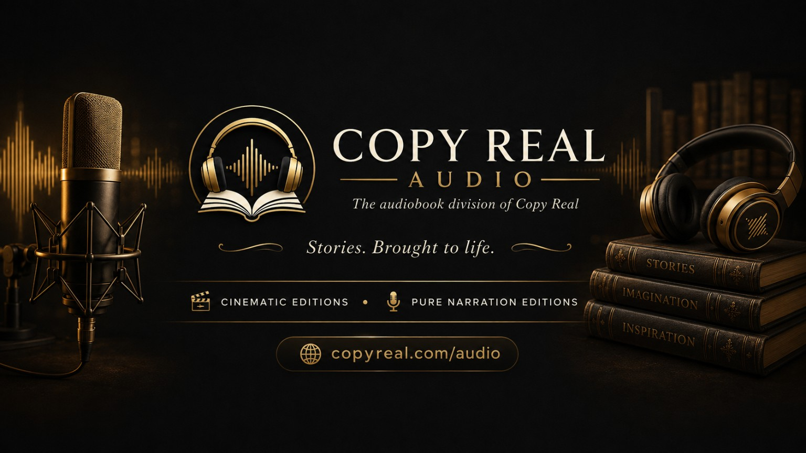

COPY REAL AUDIO
Pure Narration and Cinematic Editions, presented title by title with edition-specific and territory-aware availability.
Pure Narration
The complete text and the narrator. No added music and no sound effects. The voice and the writing remain the entire production.
Cinematic Editions
The same complete narration presented as a distinct edition with designed atmosphere and cinematic sound effects. Current Copy Real CFX policy: no added music.
Current & selected editions
Each audiobook has its own edition record. Retail links, availability, format and supplementary material can change independently without changing the core catalogue architecture.


Built for changing distribution.
Copy Real Audio is the imprint. Retailers are destinations, not the architecture of the catalogue.
Retail links
Spotify, Apple Books, Google, Storytel, library platforms and other destinations can be attached title-by-title and replaced without rebuilding the page.
Territory
Each edition can carry its own country availability statement. No global availability is implied simply because the title appears here.
Supplementary material
Listener companions, maps, illustrations and other edition-specific material can be attached where relevant.
Historic covers stay historic.
Older published artwork may still carry the AV / AudioVerse mark. Those genuine covers remain visible until an edition is naturally refreshed; all new identity work uses Copy Real Audio.